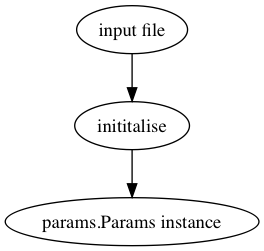

Getting started¶
Installation¶
For this to run, you will need the following installed
- Python 2.7+/3+
- NumPy
- Matplotlib
If running on Mac OS X, I recommend installing the Anaconda package. On Ubuntu, just type:
sudo apt-get install python python-numpy python-matplotlib
Running an example¶
Parameters for each simulation are contained in separate files in the inputs directory. For example, to run the simulation described by inputs/ball.py, run the following in the terminal:
python MPM.py ball
By default, the output files should be contained in ~/Documents/poly-mpm.
Loading example data¶
This is a fairly convoluted process, but is kind of summarised here:
Any data which is not provided in the input file will be created with a default value in initialise.py. This complete data is then passed into the params.Params instance, which is used for the rest of the simulation.